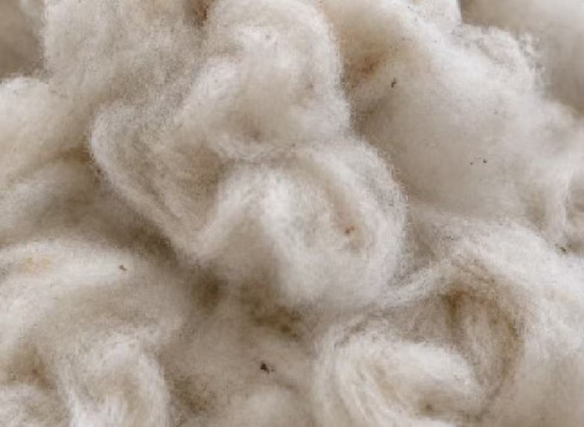
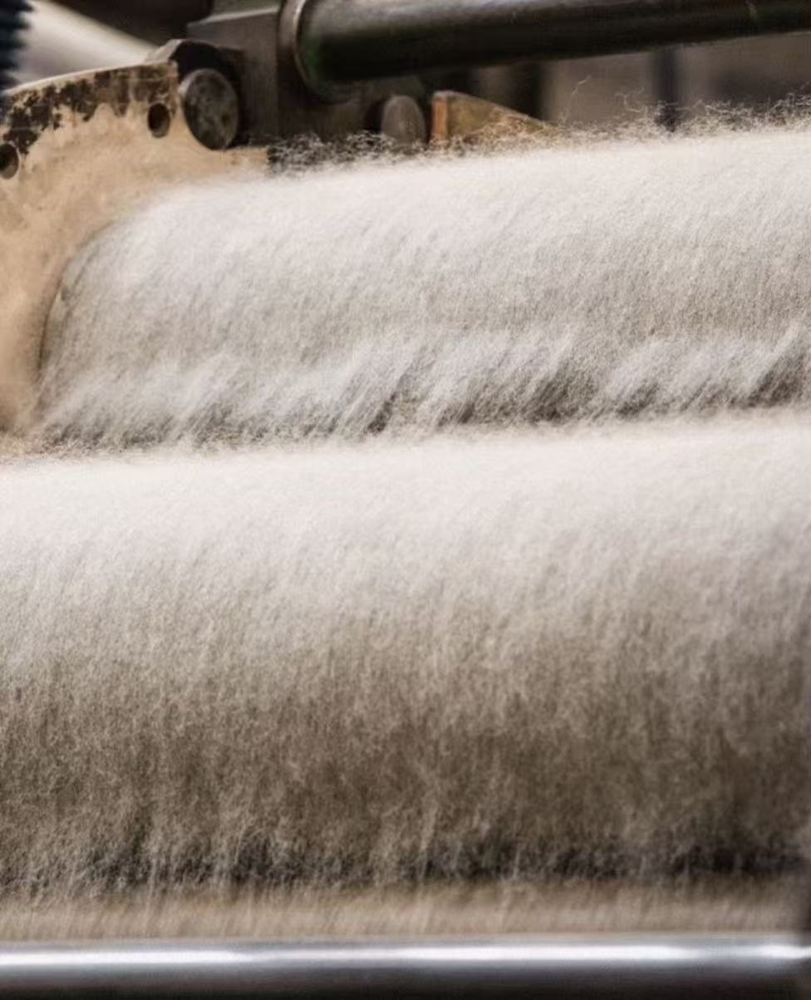
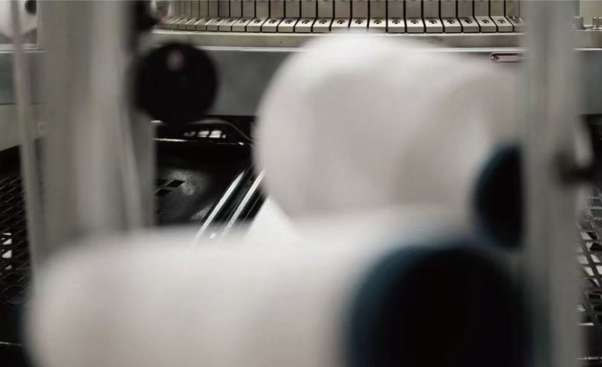
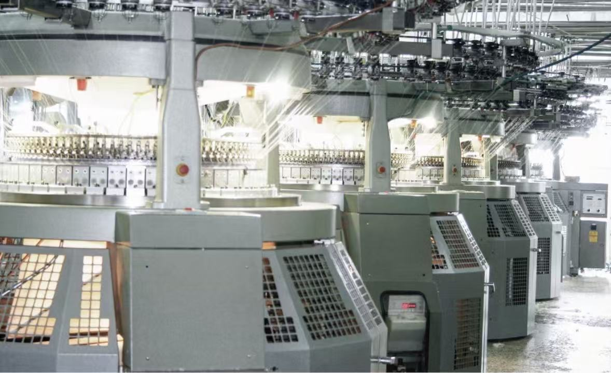
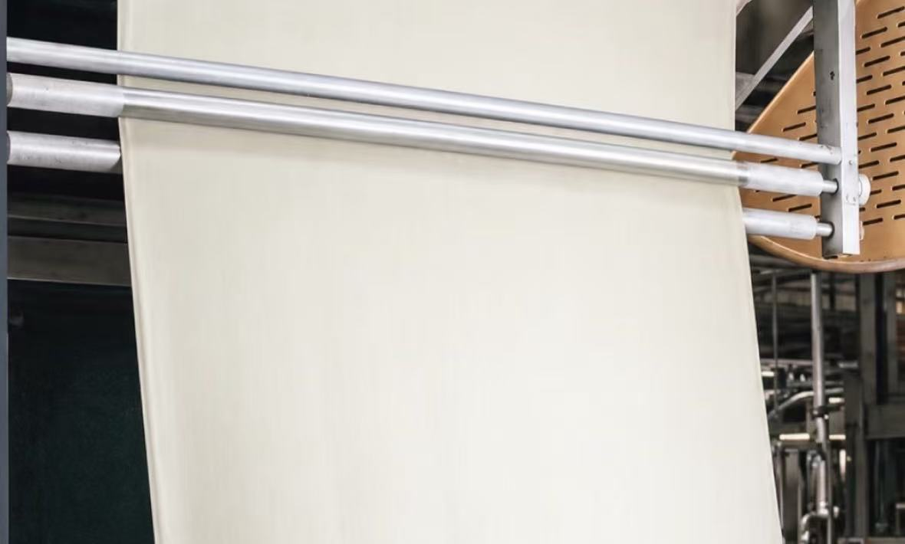

Where the Story Begins
Oxford Cloth
Every Oxford shirt begins long before the first stitch. Raw cotton is cleaned, spun into yarn, woven into Oxford cloth and carefully finished to create its distinctive texture, strength and breathable feel. Each stage shapes the character of the fabric — turning simple fibres into the foundation of a shirt designed to be worn, lived in and remembered.




